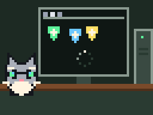
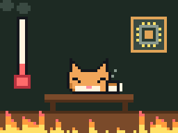
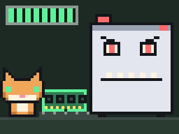
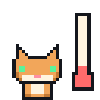
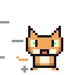

Месяц 1 · Урок 3 · Центр Памятьвиля
Мозг и память: процессор, RAM, плата
Кто в компьютере думает, где он держит мысли, почему ему жарко и откуда он берёт ток.
Мем недели
Дедушка: «Компьютер тормозит, наверное, вирус»

47 вкладок и 3 антивируса. Решение: поставить четвёртый
Почему браузер так любит оперативку, узнаем сегодня.

Процессор: тот, кто думает
Процессор (CPU, Central Processing Unit) это главная микросхема компьютера. Всё, что делает программа, в итоге превращается в простые команды для процессора: «сложи два числа», «сравни», «возьми число из памяти», «положи обратно». Таких команд он выполняет миллиарды в секунду.
Внутри процессора миллиарды транзисторов, тех самых выключателей из прошлого урока. Они такие маленькие, что на кончике иглы поместятся тысячи. Корпус процессора размером с печенье, а сам кристалл внутри ещё меньше, примерно с ноготь.
Бит Байт
Процессор не умный. Он очень-очень быстрый и очень послушный. Ум у программиста, который написал команды.
Такты и гигагерцы
Процессор работает по команде маленького метронома, который тикает с огромной скоростью. Один тик называется такт. На каждом такте процессор делает очередной маленький шаг.
Скорость тиканья меряют в герцах. 1 Гц это один такт в секунду. 1 ГГц (гигагерц) это миллиард тактов в секунду. Обычный процессор сейчас работает на 3–5 ГГц, то есть тикает 3–5 миллиардов раз в секунду.
Представь
Если бы ты считал вслух по одному числу в секунду без сна и еды, то до трёх миллиардов досчитал бы примерно за 95 лет. Процессор на 3 ГГц делает это за одну секунду.
Процессор, когда кулер не чистили с 2019 года

100 °C. Всё нормально. Работаем
Ядра и потоки
Раньше у процессора был один «исполнитель». Сделать его ещё быстрее стало трудно: он слишком сильно грелся. Тогда инженеры стали ставить в один процессор несколько исполнителей. Каждый называется ядро.
Представь кухню. Один повар очень быстро режет, варит и жарит, но всё по очереди. Четыре повара могут готовить четыре блюда одновременно. Так и с ядрами: одно ядро считает игру, второе записывает видео, третье держит Discord.
Потоки это хитрость: одно ядро делает вид, что оно два, и подхватывает вторую задачу, пока первая чего-то ждёт. Поэтому пишут, например, «6 ядер, 12 потоков».
Глубже: почему 8 ядер не делают игру в 8 раз быстрее
Не каждую работу можно разделить. Если нужно сварить суп, а потом посолить его, второй повар не поможет: солить можно только готовый суп. Во многих программах так же: следующий шаг зависит от предыдущего. Поэтому для игр важны и количество ядер, и скорость каждого ядра.
Глубже: что такое нанометры в рекламе процессоров
«Техпроцесс 5 нм» говорит о том, насколько мелко сделаны транзисторы. Чем мельче, тем больше их помещается и тем меньше они греются. Нанометр это миллионная доля миллиметра. Человеческий волос толщиной около 80 000 нм.
Память: где компьютер держит мысли
Процессор считает быстро, но ему нужно откуда-то брать числа и куда-то класть результат. Для этого есть память. Есть она нескольких видов, и все они отличаются скоростью и объёмом.
| Память | Где | Объём | Скорость | После выключения |
|---|---|---|---|---|
| Кэш | Внутри процессора | Мегабайты | Самая быстрая | Пропадает |
| Оперативная (RAM) | Планки на плате | 8–32 ГБ | Быстрая | Пропадает |
| Диск (SSD, HDD) | Отдельное устройство | Сотни ГБ, терабайты | Медленная | Остаётся |
Сравнение с письменным столом
Представь, что ты делаешь домашку.
- Кэш это то, что у тебя в руках: ручка и листок. Достать мгновенно, но много не удержишь.
- Оперативная память это стол. На нём лежат учебники и тетради, которые нужны сегодня. Взять быстро, места довольно много.
- Диск это шкаф в другой комнате. Там лежит всё, что у тебя есть, но за каждой книгой надо идти.
Когда ты запускаешь игру, она копируется со шкафа (диска) на стол (RAM). Поэтому игры долго грузятся, а потом работают быстро. Когда стол заставлен, приходится постоянно бегать к шкафу, и компьютер начинает тормозить.
Бит Байт
Вот почему важно нажимать «Сохранить». Пока не сохранил, текст лежит только на столе. Выключили свет, стол очистился.
Браузер, когда открываешь ещё одну вкладку

Оперативка: было 16 ГБ, осталось 0 и воспоминания
Оперативная память
RAM (Random Access Memory) продаётся планками. Каждая планка вставляется в длинный слот на материнской плате. Объём планок складывается: две по 8 ГБ дают 16 ГБ. На планке пишут поколение, например DDR4 или DDR5. Поколения не совместимы: планка DDR5 не влезет в слот для DDR4, у них вырез в разных местах.
Сколько нужно в 2026 году: для учёбы и браузера хватает 8 ГБ, для игр и монтажа удобно 16–32 ГБ.
Глубже: что такое файл подкачки
Если оперативка закончилась, Windows не выключается, а выносит часть данных на диск в специальный файл подкачки. Это как класть учебники на пол в другой комнате. Работает, но медленно. Если компьютер вдруг стал думать над каждым кликом, а диск постоянно занят, скорее всего, не хватает RAM.
Глубже: двухканальный режим
Две планки по 8 ГБ обычно работают быстрее одной на 16 ГБ. Процессор может обращаться к ним одновременно, как будто у дороги стало две полосы. Поэтому планки часто продают парами.
Плата, питание и охлаждение
Материнская плата
Материнская плата это большая зелёная (или чёрная) плата, к которой подключается всё остальное. Если процессор это мозг, то плата это нервная система: по её дорожкам бегают сигналы между всеми деталями.
На плате есть:
- Сокет: гнездо для процессора. У Intel и AMD разные сокеты, и они меняются каждые несколько лет.
- Слоты DIMM для оперативной памяти.
- Слот PCIe x16 для видеокарты, самый длинный.
- Разъёмы для дисков: SATA и M.2.
- Задняя панель с USB, звуком и сетью.
- Маленькая круглая батарейка. Она питает часы и помнит настройки, пока компьютер выключен из розетки.
Блок питания
В розетке 220 вольт переменного тока. Детали компьютера такое не выдержат: им нужно 12, 5 и 3,3 вольта постоянного тока. Блок питания (БП) превращает одно в другое. Его мощность пишут в ваттах, например 500 W. Мощная видеокарта может съесть больше, чем всё остальное вместе.
Экономить на блоке питания плохая идея. Дешёвый БП может выдать скачок напряжения и сжечь сразу несколько деталей.
Почему компьютеру жарко
Каждый раз, когда транзистор переключается, выделяется капелька тепла. Миллиарды переключений в секунду дают много тепла: процессор под нагрузкой греется как маленький утюг. Поэтому на нём стоит радиатор (металл с рёбрами, который забирает тепло) и кулер (вентилятор, который сдувает тепло с рёбер).
Между процессором и радиатором наносят термопасту. Поверхности кажутся гладкими, но на самом деле в них микроскопические ямки, где остаётся воздух. Воздух плохо проводит тепло, а паста заполняет эти ямки.
Ноутбук на одеяле во время игры

Кулер: я работаю на 100%. Одеяло: нет.
Если процессор перегревается, он сам снижает частоту, чтобы не сгореть. Это называется троттлинг: игра вдруг начинает тормозить. Если и это не помогает, компьютер просто выключается. Поэтому пыль в корпусе, высохшая термопаста и ноутбук на мягком одеяле это частые причины тормозов.
Глубже: водяное охлаждение
Вместо большого радиатора можно поставить на процессор водоблок. По трубкам бежит жидкость, уносит тепло к радиатору на стенке корпуса, и там его сдувают вентиляторы. Это тише и эффективнее для мощных процессоров, но дороже. Жидкость там специальная, а не вода из-под крана.

Бит Байт
На следующем уроке разберём, куда компьютер складывает файлы навсегда и как он рисует картинку. Там будет мёртвый пиксель.
Повтори и сделай ДЗ
Коротко
- Процессор выполняет команды программ, миллиарды в секунду.
- 1 ГГц = миллиард тактов в секунду.
- Ядра работают одновременно, как повара на одной кухне.
- Кэш в руках, RAM на столе, диск в шкафу: чем быстрее, тем меньше.
- RAM забывает всё при выключении, диск помнит.
- Плата соединяет детали, БП даёт им ток, кулер и термопаста убирают тепло.
Сыграй ещё раз в игры выше: задания каждый раз новые. Потом заполни домашнее задание. Делай его сам, без подсказок: так ты заработаешь XP честно.